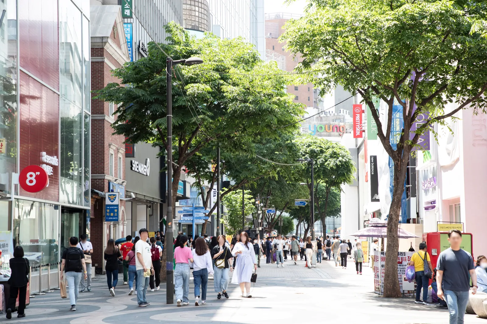
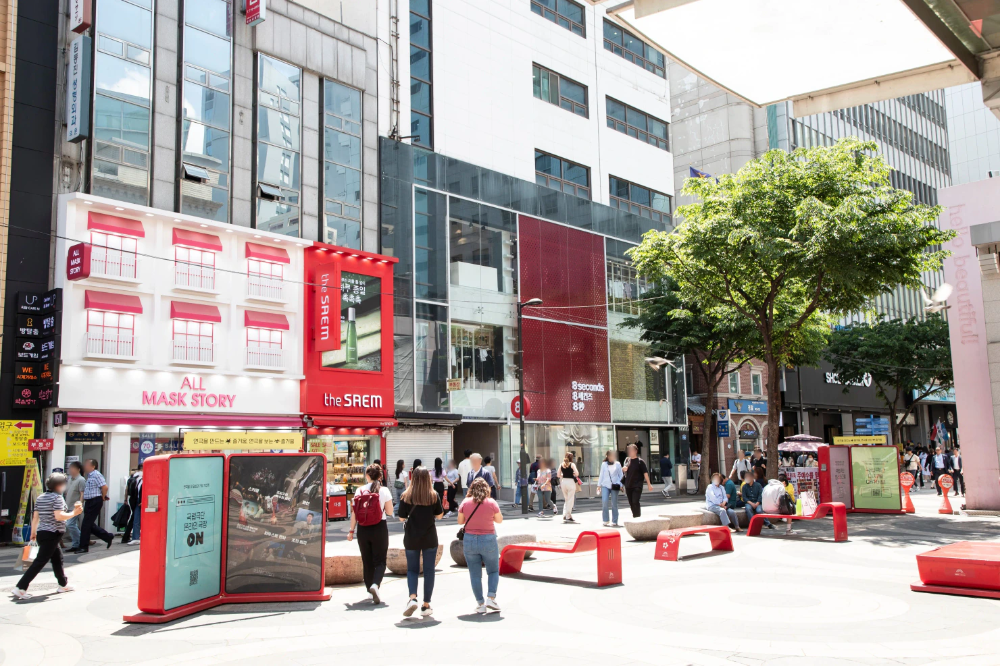
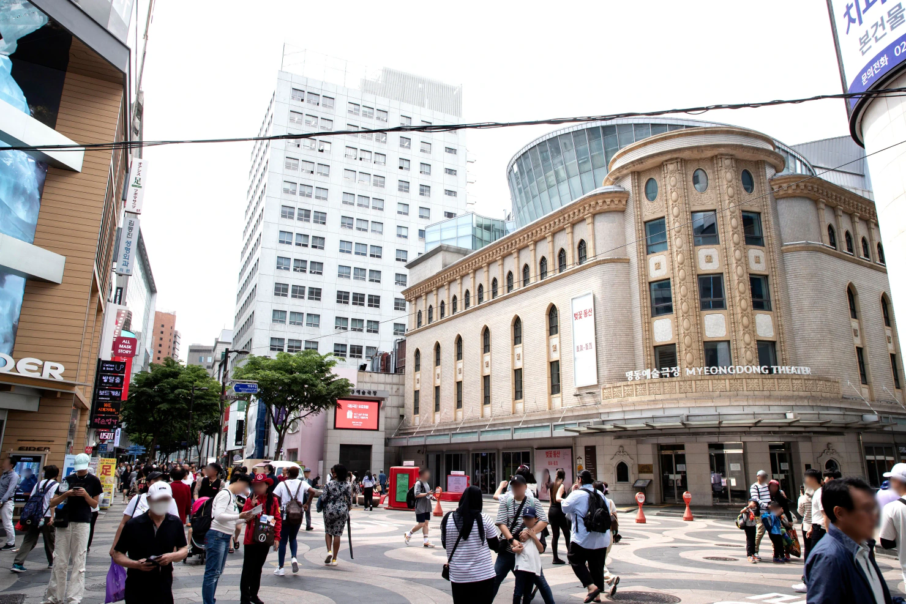
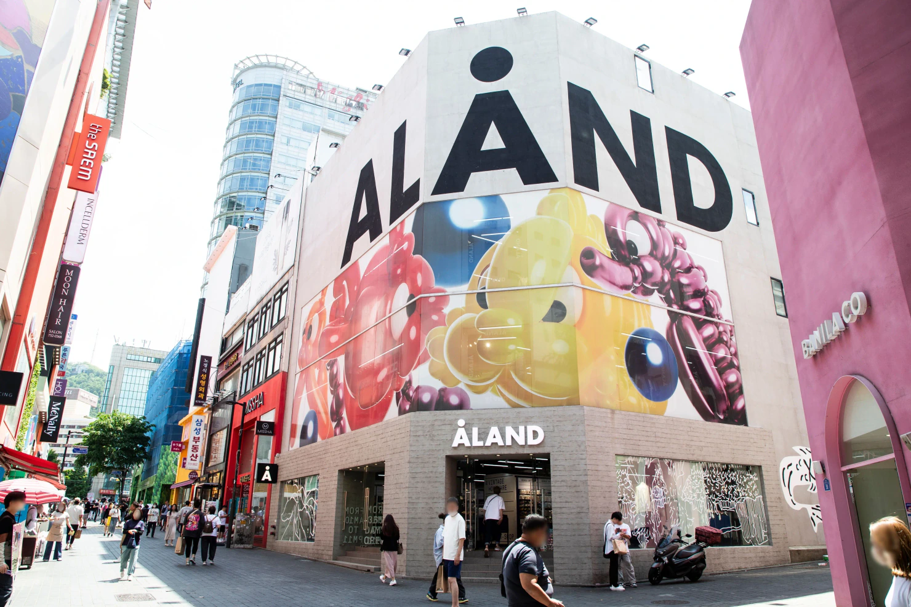
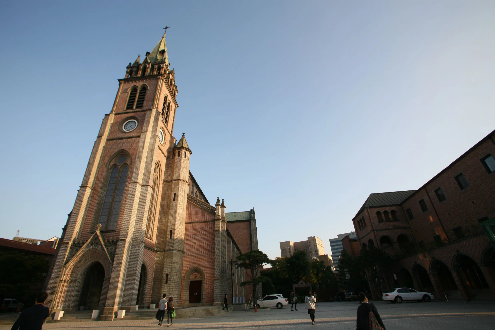
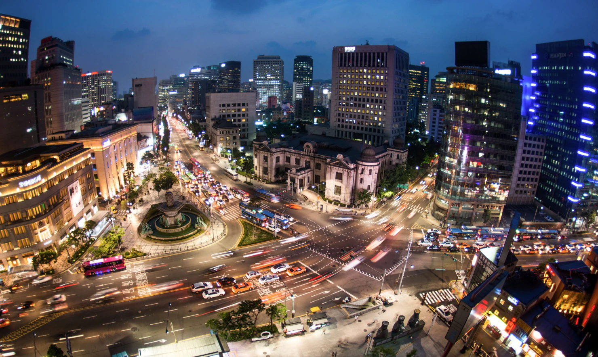

Guide de Myeongdong 2026
Il est facile de se méprendre sur Myeongdong.

Si vous venez chercher un quartier calme de Séoul, la foule, les vitrines lumineuses et l’affluence touristique peuvent décevoir. Si vous profitez de ses points forts — K-beauty, boutiques regroupées, repas facile, pause centrale entre deux visites et base pratique en soirée — Myeongdong devient bien plus utile.
Pour la plupart des voyageurs, Myeongdong ne demande pas une journée entière de visites.
Une première découverte réussie peut se limiter à :
shopping ou rendez-vous beauté → vrai repas → cathédrale de Myeongdong → une activité en soirée
Cette dernière étape peut être Namsan, NANTA ou Euljiro.
Choisissez-en une.
L’erreur n’est pas de visiter Myeongdong. C’est de passer six heures dans des boutiques semblables faute d’avoir décidé ce que vous veniez y faire.
Les vrais atouts de Myeongdong
Myeongdong est l’un des quartiers de Séoul les plus tournés vers les touristes.
Ce n’est pas automatiquement une raison de l’éviter.
Ce qui le rend touristique le rend aussi pratique : de nombreux magasins dans un espace assez compact, des produits de beauté faciles à comparer, des restaurants proches, une aide en anglais plus courante que dans beaucoup de quartiers ordinaires et une position entre plusieurs grands secteurs du centre de Séoul.
Pour un premier séjour, cela peut simplifier les choses.
Vous pouvez passer la matinée autour d’un palais ou dans un quartier traditionnel, revenir au centre, faire du shopping à Myeongdong, manger, puis décider de poursuivre vers Namsan ou Euljiro.
Pas besoin d’un plan de transport compliqué pour chaque heure.
Myeongdong est surtout utile quand vos achats ont un objectif
Si la K-beauty figure déjà sur votre liste, Myeongdong est pertinent.
Un rendez-vous de colorimétrie ou de maquillage peut même donner un fil conducteur au reste de l’après-midi.
Si votre projet consiste seulement à « se promener et voir », le quartier peut vite fatiguer. Il y a trop de boutiques pour que tout regarder soit une stratégie utile.
Décidez d’abord de ce que vous cherchez.
C’est aussi un bon endroit pour faire une pause
Myeongdong peut s’insérer entre deux grandes séquences de visites.
Vous avez peut-être déjà marché plusieurs heures à Gyeongbokgung, Bukchon, Insadong ou Jongno. Une autre grande attraction n’est pas forcément ce dont vous avez besoin ensuite.
Myeongdong permet de manger, de s’asseoir, de faire des achats à l’intérieur, de prendre un café, de revenir à un hôtel proche ou simplement de ralentir avant la soirée.
Ce rôle compte après plusieurs heures de visites ailleurs dans le centre de Séoul.

Qui peut y passer moins de temps
Si vos achats de beauté sont déjà faits, que les enseignes ne vous intéressent pas et que vous préférez les rues calmes ou les cafés indépendants, un repas ou une courte promenade peut suffire.
Les personnes qui connaissent déjà Séoul ont aussi moins de raisons d’y consacrer une demi-journée simplement parce que Myeongdong apparaît sur tous les itinéraires de premier séjour.
Utilisez le quartier quand il répond à un besoin de votre voyage.
Vous n’êtes pas obligé d’aimer tous les quartiers célèbres de Séoul.
Partez du temps dont vous disposez vraiment
Myeongdong devient plus simple une fois décidée la durée que vous voulez lui consacrer.
Si vous avez environ deux heures
Choisissez une raison de venir.
Par exemple :
achats K-beauty → repas
ou :
cathédrale de Myeongdong → dîner → courte promenade en soirée
Deux heures ne suffisent pas pour combiner de vrais achats, un rendez-vous de colorimétrie, les stands de rue, la cathédrale et Namsan sans courir.
Retirez une étape.
Si vous avez trois à cinq heures
C’est une durée à privilégier pour beaucoup de premières visites.
Vous avez le temps de faire des achats sans vous précipiter, de prendre un vrai repas, de parcourir les rues principales et de vous arrêter à la cathédrale.
Ajoutez ensuite une activité plus longue si les horaires le permettent :
- une expérience beauté ou de colorimétrie réservée
- NANTA
- Namsan
- Namdaemun
- Euljiro plus tard dans la soirée
Le mot important est « une ».
Tous ces lieux paraissent assez proches sur une carte pour donner envie d’en ajouter. La marche, l’attente, les sacs de courses, les files au restaurant et les rendez-vous changent le calcul une fois sur place.
Si vous avez une journée entière
Une journée entière peut se justifier si Myeongdong sert de centre à un parcours plus large dans le cœur de Séoul.
Par exemple :
Namdaemun → shopping à Myeongdong → expérience réservée → dîner → NANTA
ou :
visites dans le centre de Séoul → Myeongdong → dîner → Namsan
Passer du matin au soir dans les mêmes rues commerçantes a moins de sens, sauf si les achats sont l’une des principales raisons de votre voyage.
Si votre hôtel est à Myeongdong
Ne faites pas de chaque journée une journée à Myeongdong.
Vous perdriez le principal avantage d’y séjourner.
Profitez du quartier avant et après les visites de la journée.
Partez le matin vers les palais. Revenez déposer les sacs et vous reposer, puis ressortez pour dîner, faire des achats ou une activité en soirée.
L’intérêt d’un hôtel central est de pouvoir y revenir.
Vous n’avez pas besoin de passer tout le séjour à cinq minutes du hall pour justifier votre choix.
Par où commencer : station Myeongdong ou Euljiro 1-ga ?
Il n’existe pas une seule bonne entrée à Myeongdong.
Le quartier se situe entre la station Myeongdong, sur la ligne 4, et Euljiro 1-ga, sur la ligne 2.
Le meilleur point de départ dépend donc de votre étape précédente et de la suivante.
Commencez à la station Myeongdong si le sud s’intègre mieux à votre journée
Choisissez la station Myeongdong si vous arrivez par la ligne 4 ou prévoyez Namsan plus tard.
Elle donne aussi directement accès au sud du secteur commerçant.
Depuis là, vous pouvez remonter progressivement vers le nord au lieu de tourner en rond.
Commencez à Euljiro 1-ga si vous arrivez du nord
Euljiro 1-ga convient mieux si votre journée vous mène déjà vers City Hall, Euljiro ou un autre trajet de la ligne 2.
Au lieu d’ajouter une correspondance pour arriver à une station appelée « Myeongdong », entrez par le nord et traversez le quartier à pied.
C’est l’un de ces petits choix à Séoul qui économisent plus d’énergie que la carte ne le suggère.
Utilisez les deux stations comme extrémités du parcours
Vous n’êtes pas obligé de repartir par votre station d’arrivée.
Un parcours d’achats plus efficace peut être :
station Myeongdong → rues commerçantes → cathédrale / nord de Myeongdong → Euljiro 1-ga
ou l’inverse.
Cela donne une direction à la promenade.
Sans direction, il est facile de découvrir que vous êtes passé trois fois devant la même boutique de cosmétiques.

Vos sacs de courses peuvent changer le parcours
Un trajet qui paraissait simple à 14 h peut sembler différent après plusieurs achats.
Si vous logez à proximité, déposer les sacs à l’hôtel avant le dîner ou Namsan peut être plus utile qu’une boutique supplémentaire.
Cela compte encore davantage pour les familles, les personnes chargées d’achats détaxés ou celles parties le matin avec un sac à dos déjà plein.
Préparez la seconde moitié de la visite avec les sacs que vous pensez porter, pas avec les mains libres de votre arrivée.
Faire du shopping sans y perdre une demi-journée
Traiter chaque vitrine comme une attraction distincte est une mauvaise façon de faire les boutiques à Myeongdong.
Il y en a trop.
Avant d’arriver, voyez dans quel cas vous vous reconnaissez.
« La K-beauty m’intéresse, mais je ne sais pas quoi acheter. »
Commencez par un grand magasin multimarque.
Servez-vous-en pour repérer les marques, les types de produits et les prix.
Vous découvrirez peut-être que vous cherchez seulement une protection solaire et des soins. Ou que le maquillage est ce qui vous intéresse vraiment.
Dans les deux cas, vous aurez avancé.
Inutile d’entrer dans chaque boutique de beauté avant d’avoir précisé votre recherche.
« Je connais déjà les marques ou les produits. »
Myeongdong devient alors une étape de comparaison plutôt que de découverte.
Allez dans les magasins qui vendent ce que vous voulez réellement.
Vérifiez le produit, la teinte, le format, le contenu du coffret et le prix final, sans supposer que toute promotion est une bonne affaire.
Un grand sac rempli de produits imprévus ne prouve pas que la journée d’achats est réussie.
« Je cherche des cadeaux. »
Séparez les cadeaux de vos achats personnels.
Il est plus facile de choisir ce que vos proches utiliseront vraiment si vous fixez d’abord un budget et une quantité approximatifs.
Sinon, les petits achats s’accumulent très vite.
Les objets compacts sont aussi plus pratiques que des produits qui compliqueront ensuite les bagages.
« Les produits de beauté ne m’intéressent pas vraiment. »
Ne passez pas des heures à faire comme si vous deviez absolument comprendre l’attrait de Myeongdong pour la beauté.
Profitez du quartier pour la mode, les repas, la cathédrale, une expérience réservée ou le passage entre d’autres lieux.
Vous ne raterez pas votre séjour à Séoul pour avoir laissé de côté cinq boutiques de cosmétiques.

Arrêtez quand les sacs commencent à dicter la suite
C’est une limite pratique.
Quand vos achats vous coupent l’envie de monter une côte, de faire une autre queue ou de rester tard, ils ont déjà changé le reste de la journée.
Si l’hôtel est proche, retournez-y.
Sinon, demandez-vous si un autre passage en boutiques est vraiment nécessaire avant le dîner.
Myeongdong est compact.
Vos achats ne le sont pas forcément.
La K-beauty à Myeongdong en 2026
Myeongdong est l’un des endroits les plus simples de Séoul pour passer de l’intérêt pour la K-beauty aux achats.
Trouver des cosmétiques n’est pas le problème.
Il faut surtout savoir par où commencer quand plusieurs étages de produits, les boutiques de marques, les promotions et des noms inconnus se disputent votre attention.
Ce choix est devenu encore plus pertinent en 2026. Olive Young a ouvert Central Myeongdong Town en mars : un magasin de trois étages d’environ 950 pyeong, conçu spécialement pour la demande internationale de K-beauty.
Si vous ne savez pas quoi acheter, commencez par un grand magasin
Un grand multimarque est le premier arrêt le plus simple si vous voulez des soins ou du maquillage coréens sans connaître encore les marques et produits.
Profitez de cette première visite pour réduire le choix.
Cherchez-vous des soins, une protection solaire, des produits pour les lèvres ou du maquillage ?
Achetez-vous pour vous ou pour offrir ?
Voulez-vous des produits difficiles à trouver chez vous, ou simplement payer moins cher en Corée des marques que vous utilisez déjà ?
Répondre à ces questions est plus utile que sortir du premier magasin avec un panier plein.
Si vous connaissez déjà le produit, changez de méthode
Quand vous connaissez la marque, la teinte ou le nom du produit, il y a beaucoup moins de raisons de parcourir toutes les boutiques de cosmétiques.
Vérifiez l’article exact recherché.
Comparez ensuite le format, le lot, la promotion et le prix final.
Une offre « 1+1 » n’est une bonne affaire que si vous en vouliez deux.
Un grand coffret cadeau reste pratique jusqu’au moment de le faire entrer dans la valise.
Myeongdong facilite les comparaisons. Cela ne justifie pas d’acheter à chaque promotion.
Les boutiques de marque gardent leur intérêt
Les grands multimarques sont efficaces, mais ne remplacent pas automatiquement toutes les boutiques officielles.
Si une marque coréenne motive une grande partie de vos achats, sa boutique peut mériter un détour pour une gamme plus large, d’autres coffrets ou un service propre à la marque.
L’approche pratique ne consiste pas à opposer Olive Young aux boutiques de marque.
Elle suit plutôt cet ordre :
multimarque pour comprendre l’offre → boutique de marque pour une raison précise
Cela évite de passer l’après-midi devant une succession de rayons presque identiques.
Pensez à la colorimétrie avant de gros achats de maquillage
Si vous prévoyez déjà une analyse de colorimétrie à Séoul, la placer avant vos achats importants peut changer ce que vous achetez.
Les consultations actuellement proposées à Myeongdong peuvent porter sur les couleurs des vêtements, du maquillage, des cheveux et des bijoux. Certaines comprennent une aide en anglais ou de l’interprétation.
Un rendez-vous le matin ou en début d’après-midi peut donc être particulièrement utile.
Vous appliquez les conseils directement en magasin, au lieu d’acheter d’abord et de découvrir ensuite que la moitié des couleurs ne correspond pas à vos attentes.
Prenez votre passeport si vous souhaitez la détaxe
N’attendez pas l’aéroport pour penser au remboursement de taxe.
Les règles coréennes actuelles exigent généralement un achat éligible d’au moins 15 000 ₩. Dans les magasins participants à la détaxe immédiate, les voyageurs éligibles peuvent présenter leur passeport pour déduire la taxe au paiement, sous réserve des plafonds par transaction et par séjour. Le plafond de détaxe immédiate est inférieur à 1 million de wons par transaction, avec au maximum 5 millions de wons d’achats éligibles sur le séjour.
La règle pratique est plus simple :
gardez votre passeport, repérez le panneau de détaxe et demandez avant de payer.
Ne supposez pas que tous les magasins suivent la même procédure.
N’ouvrez pas les produits que vous pourriez devoir présenter non utilisés pour l’exportation avant d’avoir compris les conditions.
Sachez terminer vos achats de beauté
À Myeongdong, c’est plus difficile qu’il n’y paraît.
Une fois vos achats prévus faits, arrêtez-vous.
Une autre boutique de cosmétiques n’est généralement pas plus utile parce qu’elle se trouve 30 mètres plus loin.
Gardez de l’énergie pour dîner et découvrir le reste de Séoul.
Cuisine de rue ou vrai repas ?
Les stands de cuisine de rue font partie de ce que les voyageurs s’attendent à voir à Myeongdong.
Ils ne doivent pas forcément remplacer le dîner.
Ils se prêtent surtout à l’ambiance : promenez-vous, regardez, choisissez une ou deux choses qui vous attirent vraiment, puis voyez si vous voulez encore un vrai repas.
La distinction compte, car les restaurants du quartier répondent à des envies très différentes.
Explorez les stands sans suivre une liste obligatoire
Vous n’avez pas besoin de manger un plat parce qu’il figure dans une vidéo intitulée « 10 choses à goûter absolument à Myeongdong ».
Certains stands sont amusants parce qu’on voit la préparation. D’autres proposent un en-cas facile à manger en marchant.
Les prix et la foule peuvent aussi refléter votre présence dans l’un des quartiers touristiques les plus fréquentés de Séoul.
Regardez d’abord.
Achetez ce qui vous fait réellement envie.
Laissez le reste sans craindre d’avoir manqué Séoul.
Pour des nouilles, Myeongdong Kyoja a une fonction claire
L’intérêt de Myeongdong Kyoja ne vient pas d’une obligation pour tous les voyageurs de visiter le même restaurant célèbre.
Il répond à un besoin précis.
Ce restaurant familial existe depuis 1966 et se concentre sur une carte très courte autour des nouilles kalguksu et des raviolis.
Il convient pour un repas coréen simple sans consacrer une autre heure à chercher un restaurant.
Il peut moins convenir pour un dîner calme, une longue conversation ou un large choix de plats.
Populaire et efficace ne signifie pas forcément reposant.
Hadongkwan répond à une autre envie
Hadongkwan ne devrait pas être simplement le « restaurant numéro deux » à côté de Myeongdong Kyoja.
Il répond à un autre besoin.
Ce restaurant de gomtang remonte à 1939. Il ouvre tôt et ferme traditionnellement quand la soupe préparée est épuisée. On y vient pour une soupe de bœuf à l’ancienne de Séoul, davantage que pour une soirée au restaurant.
Il convient donc mieux au petit-déjeuner ou au déjeuner qu’à une recherche de dîner après la tombée de la nuit.
Si vous voulez précisément découvrir une institution culinaire du vieux Séoul, organisez-vous selon ses horaires.
Pour y manger, prévoyez une visite en journée au lieu de le garder comme éventuelle étape du soir.
Si la cuisine de marché est votre objectif, pensez plutôt à Namdaemun
Myeongdong et Namdaemun sont assez proches pour être souvent traités comme interchangeables.
Ils ne le sont pas.
Pour les cosmétiques, le shopping central et une soirée facile, restez à Myeongdong.
Si vous recherchez désormais des allées de marché et une étape davantage consacrée à la cuisine, il peut être plus pertinent de consacrer ce temps à Namdaemun.
Les deux quartiers se combinent bien, mais ne devraient pas servir exactement au même objectif.
Une règle simple pour manger
Gardez les stands de Myeongdong pour un en-cas et l’ambiance.
Choisissez un restaurant pour un vrai repas.
Allez vers Namdaemun si le marché lui-même fait partie de l’expérience recherchée.
Cette distinction évite bien des repas ou en-cas choisis sans réel intérêt.
Faites une pause à la cathédrale de Myeongdong
La cathédrale n’a pas besoin de devenir une autre attraction parcourue au pas de course.
Son intérêt tient en partie à son emplacement.
Après les rues bondées, les enseignes lumineuses et les boutiques répétitives, elle donne un autre rythme à l’après-midi.
Achevée en 1898, la cathédrale de Myeongdong est un repère important dans l’histoire du catholicisme et de l’architecture gothique en Corée.
Mais nul besoin d’un cours d’architecture pour profiter de l’arrêt.

Placez-la entre les achats et la soirée
Un parcours pratique :
shopping → cathédrale → café ou dîner tôt → programme du soir
Plutôt que :
shopping → encore du shopping → toujours du shopping
Cette pause compte davantage si vous avez déjà passé la matinée à visiter d’autres lieux du centre de Séoul.
Asseyez-vous.
Regardez ce que vous avez acheté.
Voyez s’il vous reste de l’énergie pour Namsan, NANTA ou Euljiro.
Vous constaterez peut-être que la meilleure suite est un dîner puis l’hôtel.
C’est aussi un itinéraire valable.
N’oubliez pas que c’est un lieu de culte actif
Ce n’est pas seulement un décor pour les photos.
Des offices et des activités religieuses s’y déroulent. Restez discret et ne traitez pas les espaces de prière comme un studio.
Si un office limite l’accès, ne faites pas dépendre tout l’après-midi d’une photo précise de l’intérieur.
Les abords permettent tout de même de faire une pause utile loin des rues commerçantes.
Un espace culturel se trouve aussi en sous-sol
Un ensemble culturel sous le secteur de la cathédrale accueille aussi des boutiques et des lieux où prendre une collation.
L’arrêt est donc plus pratique par mauvais temps que certains voyageurs ne l’imaginent.
Mais il ne doit pas devenir une nouvelle mission de shopping.
L’objectif est de changer le rythme de la journée.
Les expériences qui méritent une réservation
Myeongdong regorge d’activités sans préparation.
Une expérience payante doit donc justifier le temps qu’elle prend dans votre séjour à Séoul.
Deux catégories sont particulièrement pertinentes ici : la colorimétrie et les expériences beauté, et NANTA.
Elles répondent à des besoins de voyage très différents.
La colorimétrie est surtout utile avant les achats
L’analyse de colorimétrie est devenue facile à réserver autour de Myeongdong. Les prestataires actuels proposent des séances allant du diagnostic de couleurs simple au maquillage, au conseil de style ou à l’analyse du visage. Plusieurs proposent des séances en anglais ou avec traduction.
Le moment du rendez-vous compte.
Après 300 000 ₩ de maquillage acheté, les conseils peuvent rester intéressants, mais seront moins utiles pour les achats déjà terminés.
Si possible, suivez cet ordre :
colorimétrie → achats K-beauty
Le rendez-vous influence alors la suite de la journée, au lieu de rester une expérience souvenir isolée.
Ne choisissez pas automatiquement la formule la plus complète
Plus d’analyses ne signifie pas forcément mieux pour chaque voyageur.
Si vous voulez surtout connaître les couleurs de vêtements et de maquillage qui vous vont, une consultation de base peut suffire.
Si la coiffure, un maquillage complet, le style ou l’analyse de peau font réellement partie du voyage, une formule plus longue se justifie.
Vérifiez la durée et le contenu réel avant de réserver.
Vérifiez aussi l’accompagnement linguistique, sans supposer que chaque consultant peut mener toute la séance en anglais.
NANTA répond autrement à la question de la soirée
NANTA est presque l’expérience opposée.
On ne le réserve pas pour obtenir des conseils d’achat.
On le réserve pour une activité du soir organisée qui dépend peu de la compréhension du coréen.
Le théâtre de Myeongdong est en activité en septembre 2026, avec des représentations en soirée à la plupart des dates et des séances supplémentaires l’après-midi certains jours.
C’est particulièrement pratique pour les familles, les groupes de langues différentes et les voyageurs qui veulent un programme prévisible après le dîner.
C’est aussi une option utile par mauvais temps.
NANTA n’est pas indispensable pour tout le monde
Si vous n’avez que deux soirées à Séoul et que l’une offre un temps idéal pour Namsan, vous préférerez peut-être la vue sur la ville.
Pour les bars et une soirée plus adulte, Euljiro peut mieux convenir.
Si les spectacles ne vous intéressent pas, ne réservez pas NANTA uniquement pour sa proximité.
Ce guide n’a pas pour but de remplir chaque heure.
Il aide à choisir celles qui méritent de l’être.
Réservez l’expérience qui change votre programme
C’est le critère à retenir.
La colorimétrie devient intéressante si elle améliore les achats qui suivent.
NANTA peut donner une destination claire à votre soirée.
Si une expérience ne fait ni l’un ni l’autre, Myeongdong offre déjà assez de possibilités sans billet supplémentaire.
Choisissez un prolongement : Namdaemun, Namsan ou Euljiro
Myeongdong est bien situé dans le centre de Séoul.
Cela crée une tentation.
Namdaemun paraît proche. Namsan aussi. Euljiro également, comme City Hall et Cheonggyecheon.
Ils sont assez proches pour se combiner.
Cela ne justifie pas de tout combiner.
Pour la plupart des voyageurs, mieux vaut choisir une seule direction pour la seconde partie de la visite.

Choisissez Namdaemun si le marché vous attire plus qu’une autre rue commerçante
Namdaemun est le prolongement le plus simple pour une ambiance de marché après Myeongdong.
Ce vaste quartier de marché compte des milliers de boutiques. Vous n’avez pas pour autant besoin de l’explorer méthodiquement.
Choisissez une raison d’y aller.
Ce peut être les articles pour la maison, les souvenirs, les vêtements d’enfants, l’ambiance ou la cuisine.
Si vous venez pour manger, la distinction avec Myeongdong prend tout son intérêt.
Namdaemun possède des secteurs de restauration établis, comme Kalguksu Alley, près de la sortie 5 de la station Hoehyeon.
Un enchaînement pratique :
Namdaemun → déjeuner ou cuisine de marché → shopping à Myeongdong → cathédrale → soirée
Cela fonctionne particulièrement bien pour visiter le marché plus tôt et Myeongdong ensuite.
Ne gardez pas Namdaemun comme vague supplément tard le soir
Un marché ne fonctionne pas comme un quartier de sorties.
Chaque boutique et restaurant a ses horaires, et l’ambiance change avec les fermetures.
Si Namdaemun compte vraiment pour vous, donnez-lui une vraie place au programme, plutôt que de noter « s’il reste du temps » à 21 h.
Un centre officiel d’information touristique près de la sortie 5 de Hoehyeon propose aussi de l’aide en anglais, en japonais et en chinois.
Il est plus utile au début de la visite qu’en fin de soirée.
Choisissez Namsan quand la météo le justifie
Pour la vue, Namsan est le prolongement évident de Myeongdong.
Ce n’est pas pour autant un choix automatique.
La station inférieure du téléphérique de Namsan est accessible à pied depuis la station Myeongdong, mais le point important est la montée vers Namsan.
Après plusieurs heures d’achats, de sacs à porter et de files d’attente, cette marche peut sembler très différente de la même distance en début de journée.
Allez-y quand la visibilité mérite la dépense
Une fin d’après-midi ou une soirée dégagée justifie bien mieux Namsan que sa simple présence sur une liste de visites.
Si la ville disparaît dans les nuages bas, une forte pluie ou une mauvaise visibilité, inutile d’imposer la tour ce jour-là.
Choisissez NANTA, un dîner ou Euljiro, et reportez Namsan si votre programme le permet.
Déposez d’abord les sacs si possible
C’est ici qu’un hébergement autour de Myeongdong peut réellement changer le parcours.
Si votre hôtel est proche :
shopping → hôtel → déposer les sacs / courte pause → Namsan
est souvent plus raisonnable que tout porter dans la montée parce que le programme initial n’avait aucune pause.
La même attraction devient plus facile simplement en changeant l’ordre.
Choisissez Euljiro pour poursuivre par une sortie en soirée
Euljiro répond à une tout autre envie.
Ne l’ajoutez pas pour cocher une attraction de plus.
Ajoutez-le si vos achats sont terminés et que vous voulez quitter l’ambiance d’un quartier commerçant.
En marchant vers le nord et l’est depuis Myeongdong, vous rejoignez un ancien secteur commercial du centre où coexistent ateliers, bâtiments anciens, restaurants et bars plus récents.
Euljiro Nogari Alley, près de la station Euljiro 3-ga, est une destination du soir bien identifiable.
Euljiro est donc plus utile pour :
- les adultes qui veulent boire un verre après dîner
- les personnes qui connaissent déjà Séoul
- les voyageurs lassés des cosmétiques et des grandes enseignes
- ceux qui souhaitent poursuivre la soirée sans traverser la ville
Il attire moins une famille fatiguée qui a surtout besoin de dîner et de dormir.
Vous n’avez pas besoin des trois
C’est la règle à garder.
Namdaemun = marché et cuisine
Namsan = vue et météo
Euljiro = ambiance du soir
Choisissez ce qui répond à la suite de votre journée.
Vouloir rendre les trois « efficaces » en les casant autour de Myeongdong produit généralement l’effet inverse.
Myeongdong par mauvais temps
Le mauvais temps ne compromet pas Myeongdong aussi vite que certains autres itinéraires de Séoul.
Une grande partie des activités recherchées se déroule déjà à l’intérieur.
Achats de beauté, grands magasins, cafés, restaurants, rendez-vous de colorimétrie et NANTA restent possibles quand le temps change.
Myeongdong devient donc un repli utile quand une journée surtout en extérieur ne fonctionne plus.
La pluie justifie de changer l’ordre
Imaginez avoir prévu :
palais → quartier à explorer dehors → Namsan
puis une forte pluie arrive après le déjeuner.
Vous n’avez pas besoin d’abandonner la journée.
Avancez la partie en intérieur :
shopping à Myeongdong → repas → expérience réservée ou NANTA
Reportez ensuite la vue à un autre jour si nécessaire.
Vous profiterez mieux de la journée que sous un parapluie à un point de vue presque bouché.
Les passages souterrains aident, sans tout résoudre
Myeongdong dispose de liaisons souterraines utiles.
Le Myeongdong Underground Shopping Center et les passages voisins peuvent limiter une partie de l’exposition à la pluie, au vent ou à la chaleur estivale.
Cela rend certains déplacements dans le centre du quartier plus confortables.
Cela ne permet pas d’aller partout sans sortir.
Sachez ce que ces passages permettent et ce qu’ils ne permettent pas.
Ne transformez pas le mauvais temps en marathon d’achats
La pluie peut justifier de rester davantage à l’intérieur.
Elle ne justifie pas automatiquement d’acheter davantage.
Si vos achats sont terminés, allez au café, prenez un vrai repas, voyez un spectacle ou reposez-vous à l’hôtel.
Un après-midi pluvieux ne doit pas devenir quatre heures d’achats de cosmétiques improvisés.
Des parcours qui fonctionnent
Il n’existe pas un unique bon itinéraire à Myeongdong.
Plusieurs parcours ont toutefois beaucoup plus de sens qu’une promenade au hasard.
Parcours 1 — Environ deux heures : une visite ciblée
Choisissez-le si Myeongdong est une étape dans une journée plus large de visites.
station Myeongdong → achats ciblés → cathédrale → repas ou en-cas → Euljiro 1-ga
Ne réservez pas un long rendez-vous.
N’ajoutez pas Namsan.
N’essayez pas de « terminer » Myeongdong.
Choisissez un objectif d’achat et poursuivez le parcours.
Cette formule convient particulièrement après une matinée dans un autre quartier du centre de Séoul.
Parcours 2 — Une demi-journée : le choix habituel pour une première visite
C’est un parcours à privilégier pour beaucoup de premières visites.
Horaires suggérés — environ 5 à 6 heures, puis l’activité du soir choisie
-
14 h — Arrivez du côté adapté à votre journée
Choisissez la station Myeongdong si la ligne 4 ou le côté Namsan convient. Prenez Euljiro 1-ga si vous arrivez déjà de City Hall, de Jongno ou de la ligne 2.
L’objectif est de traverser le quartier plutôt que de tourner dans les mêmes rues.
-
14 h–15 h 30 — Commencez par le rendez-vous qui organise l’après-midi
Si vous avez réservé une séance de colorimétrie, de maquillage ou une autre expérience beauté, placez-la d’abord.
L’heure du rendez-vous est fixe. Les achats peuvent s’adapter.
Sans réservation, consacrez ce créneau à la catégorie d’achats qui compte le plus.
-
15 h 30–17 h 15 — Faites vos achats avec une heure de fin
Choisissez votre véritable objectif : soins, maquillage, mode, cadeaux ou produit précis.
Si la K-beauty prime, commencez par un grand multimarque, puis allez dans les boutiques de marque seulement pour une raison précise.
Une fois vos achats prévus faits, arrêtez-vous.
-
17 h 15–17 h 45 — Cathédrale de Myeongdong
Faites de la cathédrale la pause entre l’après-midi commerçant et la soirée.
Environ 30 minutes suffisent à la plupart des personnes qui la découvrent.
C’est un lieu de culte actif : respectez les offices et les restrictions d’accès.
-
17 h 45–19 h — Prenez un vrai repas
Les stands de rue sont facultatifs.
Goûtez une ou deux choses si elles vous attirent, mais choisissez un restaurant pour dîner vraiment.
Faites du repas une vraie pause avant la soirée.
-
Après 19 h — Choisissez une activité du soir
NANTA — pour un spectacle en intérieur à horaire fixé.
Namsan — si la visibilité est bonne et que la vue justifie la marche supplémentaire.
Euljiro — si les achats sont terminés et que vous voulez manger, boire un verre ou découvrir une autre ambiance du centre.
Une bonne fin de journée suffit.
colorimétrie ou étape beauté → achats K-beauty → vrai repas → cathédrale de Myeongdong → un prolongement en soirée
Choisissez ensuite :
Namsan si le temps est dégagé,
NANTA pour une soirée organisée à l’intérieur,
ou Euljiro pour boire un verre et une sortie plus adulte.
N’ajoutez pas les trois.
Ce parcours laisse assez de temps pour profiter de Myeongdong sans donner toute la journée aux rues commerçantes.
Parcours 3 — Marché et Myeongdong
Choisissez-le si la cuisine ou les achats d’un marché traditionnel comptent vraiment.
Horaires suggérés — environ 7 heures, puis l’activité du soir choisie
-
10 h 30 — Commencez à la sortie 5 de Hoehyeon
Commencez par Namdaemun avant Myeongdong.
Le marché dépend davantage de l’activité en journée. Myeongdong reste utile plus tard dans l’après-midi et en soirée.
-
10 h 30–11 h 30 — Parcourez le marché de Namdaemun
N’essayez pas d’en faire le tour complet.
Choisissez ce qui vous intéresse : cuisine, souvenirs, articles pour la maison, vêtements, produits pour enfants ou simplement l’ambiance.
Une heure suffit pour un premier passage si vous déjeunez pendant la même visite.
-
11 h 30–12 h 30 — Déjeunez au marché
Gardez le déjeuner pour Namdaemun.
Kalguksu Alley ou un autre repas de marché est plus pertinent que de visiter le marché avant d’aller manger ailleurs.
Ne prévoyez pas un autre gros repas dès l’arrivée à Myeongdong.
-
12 h 30–12 h 50 — Rejoignez Myeongdong à pied
Pour la plupart des voyageurs, marcher est plus simple qu’un arrêt de métro.
Cette courte marche fait la transition entre un marché traditionnel et l’un des quartiers commerçants les plus fréquentés de Séoul.
-
12 h 50–15 h 30 — Faites vos principaux achats à Myeongdong
Profitez maintenant de ce que Myeongdong fait mieux.
Fixez une priorité claire : K-beauty, cosmétiques, mode, cadeaux ou magasin précis.
Vous avez déjà passé la matinée à parcourir un marché. Ne recommencez pas en entrant dans chaque boutique.
-
15 h 30–16 h — Cathédrale de Myeongdong
Utilisez la cathédrale pour faire une pause après les achats.
Environ 30 minutes suffisent à la plupart des personnes qui la découvrent.
C’est aussi le moment de décider combien d’activités vous voulez encore faire.
-
16 h–17 h 15 — Gardez ce créneau souple
Prévoyez une dernière boutique précise, un café, le dépôt des sacs à un hôtel proche ou simplement du repos.
N’ajoutez pas une attraction uniquement parce qu’une heure est libre.
-
17 h 15–18 h 30 — Dîner
Le déjeuner était à Namdaemun.
Le dîner peut être à Myeongdong.
Asseyez-vous, reposez-vous et choisissez la soirée selon l’énergie restante.
-
Après 18 h 30 — Choisissez une activité du soir
Namsan — pour la vue.
NANTA — pour un spectacle en intérieur à horaire fixé.
Euljiro — pour une autre ambiance en soirée.
Ne forcez pas les trois dans la même journée.
Namdaemun → déjeuner au marché → marche ou court trajet vers Myeongdong → shopping → cathédrale → dîner
Le marché de Namdaemun et Myeongdong sont assez proches pour former une association naturelle dans le centre de Séoul.
L’ordre est essentiel.
Faites d’abord ce qui dépend le plus des commerces ouverts en journée.
Gardez Myeongdong, qui s’anime plus tard, pour la seconde partie.
Parcours 4 — Myeongdong comme base hôtelière
Ce parcours est différent : Myeongdong n’a pas besoin d’un créneau de visite dédié.
départ de l’hôtel → journée ailleurs à Séoul → retour → déposer les sacs / se reposer → dîner → shopping en soirée ou NANTA
Cela peut être une meilleure façon de profiter du quartier qu’une journée entière.
L’emplacement de votre hôtel fait partie de l’itinéraire.
Le quartier vous sert avant et après les visites, sans les remplacer.
Parcours 5 — Le repli par temps de pluie
Quand les activités extérieures se compliquent :
shopping à Myeongdong → long déjeuner ou café → rendez-vous de colorimétrie / beauté → NANTA
Les liaisons souterraines permettent certains déplacements entre secteurs commerçants, mais prévoyez de marcher aussi dehors.
Gardez Namsan pour une visibilité qui mérite le détour.
C’est l’un des cas où les équipements touristiques de Myeongdong deviennent un avantage.
À qui convient Myeongdong, et qui peut poursuivre ailleurs ?
Myeongdong n’est ni le meilleur quartier de Séoul ni un lieu que tout voyageur devrait éviter.
Son intérêt dépend beaucoup du séjour.
Premier voyage
Très adapté.
Myeongdong simplifie plusieurs aspects à la fois.
Sa position centrale, ses boutiques regroupées, ses nombreux restaurants, ses services touristiques et l’accès aux autres quartiers centraux donnent de la souplesse quand on découvre encore le fonctionnement de Séoul.
Cette facilité compte.
Tous les quartiers de votre premier voyage n’ont pas besoin d’être méconnus ou « locaux ».
Amateurs de K-beauty
Particulièrement adapté.
Si les soins coréens, le maquillage, la colorimétrie ou les achats de beauté occupent une place importante dans votre voyage, Myeongdong mérite du temps.
Venez toutefois avec une idée de ce que vous cherchez.
Le nombre de boutiques reste un avantage jusqu’au moment où il complique la décision.
Familles
Généralement adapté, avec des limites.
Restaurants, boutiques, solutions en intérieur et NANTA rendent le quartier relativement facile avec des âges différents.
Son point faible est la foule.
Une poussette, un enfant fatigué, les sacs de courses et l’affluence piétonne du soir peuvent ralentir une marche théoriquement courte.
Ne calculez pas le programme familial uniquement à la vitesse de marche des adultes.
Voyageurs logeant dans le centre de Séoul
Une bonne base, même si Myeongdong n’est pas l’attraction principale.
La distinction compte.
Vous pouvez choisir un hôtel à Myeongdong pour simplifier le reste de Séoul, sans vouloir y passer cinq jours à faire des achats.
Cela peut rester une bonne décision.
Voyageurs qui connaissent déjà Séoul
À choisir de façon plus ciblée.
Si vos principaux achats de beauté sont faits et que vous connaissez bien le centre, une demi-journée à Myeongdong se justifie moins.
Venez pour un restaurant, un produit, un rendez-vous, un spectacle ou un point de rencontre précis.
Puis poursuivez ailleurs.
Les visites suivantes deviennent plus intéressantes quand leur objectif se précise.
Voyageurs en quête d’une vie de quartier calme
Peu adapté.
Myeongdong est peu recommandé si votre priorité est de petites rues résidentielles, des cafés de quartier indépendants et une matinée locale tranquille.
D’autres secteurs de Séoul s’y prêtent mieux.
Ne choisissez pas Myeongdong pour passer ensuite le séjour à souhaiter qu’il ressemble à un autre quartier.
Voyageurs qui n’aiment pas les quartiers très touristiques
Myeongdong peut tout de même vous être utile.
Il ne vous plaira pas forcément.
Ce sont deux jugements différents.
Utilisez-le pour ce qu’il fait efficacement — achats, repas, spectacle ou hôtel central — puis repartez une fois ce besoin rempli.
Il n’y a rien à gagner à se forcer à rester dans un quartier célèbre.
L’actualité de Myeongdong : septembre 2026
Vérifié le 11 septembre 2026
Myeongdong évolue plus vite que beaucoup de quartiers de Séoul.
Promotions beauté, collaborations avec des personnages, boutiques éphémères et animations peuvent apparaître quelques semaines puis disparaître avant la mise à jour d’un ancien guide.
Les informations récentes y sont donc utiles, à condition de changer réellement ce que vous pourriez faire.
Olive Young × Sanrio Characters — septembre 2026
La campagne Olive Young × Sanrio Characters 2026 est prévue jusqu’en septembre 2026.
Central Myeongdong Town fait partie des magasins accueillant des installations Hello Kitty propres au lieu, avec des articles limités et des avantages d’achat.
Si les achats K-beauty étaient déjà prévus, cette information peut être utile.
Ce n’est pas une raison de traverser Séoul pour un décor temporaire.
Une animation actuelle devrait améliorer un parcours déjà souhaité, pas imposer un détour inutile.
Représentations NANTA — septembre 2026
Des représentations de NANTA à Myeongdong sont programmées en septembre 2026.
La plupart des dates proposent actuellement des séances à 17 h et 20 h, avec une séance à 14 h ajoutée certains jours.
Le programme varie selon la date. Vérifiez le jour exact avant d’organiser le dîner autour du spectacle.
Cela peut changer l’ordre de la soirée :
dîner tôt → NANTA
ou :
shopping → NANTA à 17 h → dîner
Ces deux options se préparent différemment d’une arrivée sans idée d’activité.
Ne cherchez pas toutes les boutiques éphémères
Myeongdong et les environs de Jung-gu peuvent accueillir de nombreux événements temporaires en même temps.
Certains ne durent que quelques jours.
D’autres se trouvent dans des grands magasins ou boutiques déjà sur votre parcours.
Ajoutez-en un si son thème vous intéresse vraiment et s’il s’intègre au trajet prévu.
Ne refaites pas une demi-journée à Séoul pour un événement temporaire simplement aperçu sur les réseaux sociaux.
Les événements de courte durée relèvent de cette rubrique d’actualité.
Ils ne deviennent pas des recommandations permanentes et incontournables.
Comment utiliser les informations actuelles
Partez du parcours durable de Myeongdong.
Posez-vous ensuite ces questions :
L’événement a-t-il lieu à mes dates exactes ?
M’intéresse-t-il réellement ?
Remplace-t-il quelque chose déjà prévu ?
Si les trois réponses sont oui, ajoutez-le.
Sinon, gardez votre journée telle quelle.
L’actualité devrait rendre le programme plus utile, pas plus chargé.
Le parcours de référence de Korea Inside à Myeongdong
Pour un premier séjour à Séoul, sans raison particulière d’organiser Myeongdong autrement, voici le parcours de référence.
Commencez en début d’après-midi
Gardez le matin pour un palais, Bukchon, Insadong ou une autre activité surtout en extérieur dans le centre.
Venez ensuite à Myeongdong.
Il y a peu de raisons de passer les meilleures heures matinales de visite dans des boutiques de cosmétiques, sauf si les achats sont l’objectif principal du jour.
D’abord : l’activité qui fixe les horaires
Si vous avez réservé la colorimétrie, le maquillage ou une autre expérience à heure fixe, commencez par cela.
Organisez les achats autour du rendez-vous.
Les boutiques ne doivent pas vous mettre en retard.
Sans réservation, commencez par les achats précis déjà prévus.
Ensuite : des achats avec une limite
Donnez un objectif au principal créneau de shopping.
Les amateurs de K-beauty peuvent commencer par un grand multimarque, puis aller dans les boutiques de marque seulement pour comparer quelque chose de précis.
Une fois ce que vous vouliez acheté, arrêtez-vous.
Ne laissez pas une autre promotion transformer deux heures d’achats en tout un après-midi.
Troisième étape : un vrai repas
Essayez les stands si quelque chose vous attire.
Mais ne remplacez pas par inadvertance le dîner par cinq en-cas, sauf si c’est vraiment votre envie.
Choisissez un vrai restaurant si vous voulez un vrai repas.
Si la cuisine de marché était prioritaire dès le départ, Namdaemun méritait peut-être une plus grande part de la journée.
Quatrième étape : une pause à la cathédrale
Passez par la cathédrale de Myeongdong quand elle s’intègre au trajet.
L’objectif n’est pas d’ajouter une case à cocher.
Elle sépare l’après-midi commerçant de la soirée.
Prenez ensuite la décision suivante.
Cinquième étape : un seul choix pour la soirée
C’est ici que beaucoup d’itinéraires deviennent trop chargés.
Choisissez une option :
Namsan
si la visibilité est bonne et qu’il vous reste de l’énergie pour la montée et la vue.
NANTA
pour une activité en intérieur à horaire fixé, surtout en famille ou par météo incertaine.
Euljiro
si les adultes souhaitent dîner, boire un verre ou changer d’ambiance après Myeongdong.
Si vous avez déjà fait Namdaemun, inutile d’ajouter une autre extension pour donner l’air d’une journée bien remplie.
Le parcours de référence
Pour beaucoup de premières visites :
visites dans le centre de Séoul → shopping à Myeongdong → vrai repas → cathédrale → une activité du soir
suffit.
Ce n’est pas une journée vide.
C’est une journée qui laisse encore assez d’énergie pour profiter de la soirée.
Myeongdong est touristique.
Ce n’est pas la question la plus utile.
Demandez-vous plutôt s’il répond à une envie réelle de votre séjour à Séoul.
Pour la K-beauty, des boutiques regroupées, une pause centrale facile, un spectacle ou une base hôtelière pratique, utilisez Myeongdong dans ce but.
Une fois ce besoin rempli, poursuivez ailleurs.
Séoul est bien plus vaste que Myeongdong.